Game Boy Advance · Deckbuilder roguelike · 5 éditions
SLAY THE GBA
Slay the Spire 2 dans votre poche. Cinq héros, cinq cartouches, une seule Tour à gravir — en 240×160, avec des combats façon Pokémon et les vraies illustrations du jeu.


Choisissez votre édition
Comme les grandes séries portables vendues en plusieurs versions, Slay the GBA existe en cinq cartouches. Chacune a son héros, son deck de 90+ cartes, sa relique, sa couleur, sa zone et sa mécanique signature.
Pourquoi vous allez y passer vos nuits
♥ Un vrai roguelike deckbuilder
Chaque partie est unique : construisez votre deck carte après carte, collectionnez les reliques et gravissez les trois actes de la Tour. La mort est définitive, la revanche immédiate.
⚔ Des combats façon Pokémon
Héros de dos, monstres sur leurs socles, intentions visibles, barres de PV qui se vident, dégâts flottants et secousses : la lisibilité d'un RPG GBA au service du deckbuilding.
★ Les vraies illustrations
Cartes, monstres, boss et évènements convertis depuis l'art de Slay the Spire 2 en palettes 16 couleurs, fidèles jusque dans le cadre des cartes.
◆ Une cartouche par héros
Cinq éditions à collectionner, chacune avec sa couleur, son décor et ses quatre teintes (Classique, Chromatique, Ombre, Or).
♪ Chiptune original
Sept thèmes 4 canaux (titre, carte, combat, élite, boss, victoire, défaite) et des effets sonores rétro synthétisés pour le projet.
● Sauvegarde & Ascension
Sauvegarde automatique sur cartouche, reprise en un bouton, et dix niveaux d'Ascension pour les joueurs qui en veulent toujours plus.
Cinq héros, cinq arènes
Chaque édition a son décor de combat. Captures réelles des ROMs.

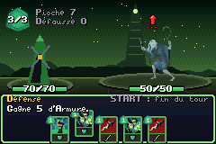

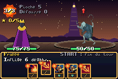
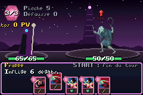
Comparer les éditions
Soldat de Fer | La Silencieuse | Le Défectueux | Le Régent | La Nécrolieuse | |
|---|---|---|---|---|---|
| Cartouche | slay_ironclad.gba | slay_silent.gba | slay_defect.gba | slay_regent.gba | slay_necrobinder.gba |
| Couleur | Rouge Sang | Vert Venin | Bleu Saphir | Or Solaire | Violet Spectral |
| Zone | Forges du Carnage | Marais du Venin | Complexe Astral | Palais Souverain | Crypte d'Outre-Tombe |
| Points de vie | 80 PV | 70 PV | 75 PV | 75 PV | 65 PV |
| Relique de départ | Sang ardent | Anneau du serpent | Noyau fissuré | Droit divin | Phylactère enchaîné |
| Deck de départ | 5× Frappe, 4× Défense, 1× Heurt | 5× Frappe, 5× Défense, 1× Neutralisation, 1× Survivant | 4× Frappe, 4× Défense, 1× Éclair, 1× Activation double | 4× Frappe, 4× Défense, 1× Chute d'étoile, 1× Vénération | 4× Frappe, 4× Défense, 1× Déchaînement, 1× Garde du corps |
| Mécanique | Force & sacrifices | Poison & surins | Orbes & Focalisation | Étoiles & Lame souveraine | Titos & Fatalité |
| Difficulté | ★☆☆ Accessible | ★★☆ Intermédiaire | ★★☆ Intermédiaire | ★★★ Expert | ★★★ Expert |
Une ascension en trois actes
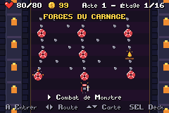
1. La Tour
Tracez votre route sur 16 étages : chaque embranchement est un choix de risque.
2. Le combat
Jouez vos cartes, lisez les intentions ennemies, et choisissez 1 carte parmi 3 à la victoire.
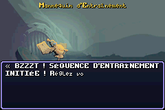
3. Les mystères
Évènements ? : un marché avec le destin, entre trésor et piège.
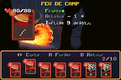
4. Le feu de camp
Reposez-vous ou forgez une carte pour la rendre plus puissante.
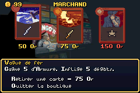
5. La boutique
Achetez cartes, reliques et potions, ou retirez une carte de votre deck.
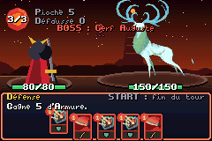
6. Le boss, puis les Anciens
Terrassez le boss de l'acte : un Ancien vous attend avec ses bénédictions.
Captures
Images réelles de la ROM, capturées dans l'émulateur.
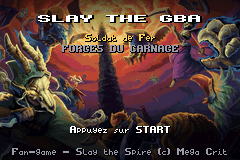
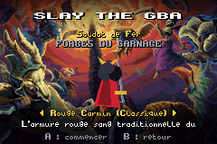
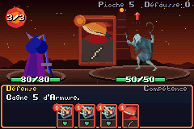
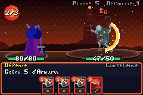
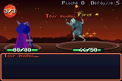
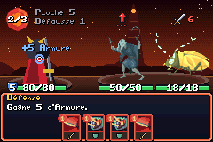
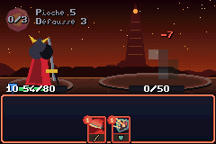
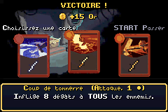
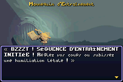
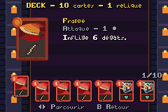
Bestiaire de l’acte 1
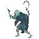
Cultist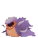
Jaw Worm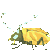
Morpion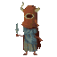
Gremlin Nob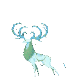
Cerf Auguste (Boss)Commandes
Identiques sur les cinq cartouches.
| Écran | Bouton | Action |
|---|---|---|
| Carte | ◄ ► | Choisir la salle suivante |
| Carte | ▲ ▼ | Faire défiler la Tour |
| Carte | A | Avancer vers la salle |
| Combat | ◄ ► | Sélectionner une carte |
| Combat | A | Jouer la carte (puis choisir la cible si plusieurs ennemis) |
| Combat | B | Annuler le ciblage |
| Combat | START / R | Finir le tour |
| Carte / Combat | SELECT | Registre du deck (B pour revenir) |
| Menus | A / B | Valider / annuler |
Télécharger les cartouches
Une ROM .gba par héros, gratuite, à ouvrir dans un émulateur (mGBA, Delta sur iPhone, RetroArch…) ou à flasher sur une cartouche EZ-Flash / EverDrive.
Jouer en 3 minutes
- Téléchargez la cartouche de votre héros (fichier
.gba) dans la section Télécharger ou sur la page du héros. - Installez un émulateur Game Boy Advance gratuit :
- Ouvrez le fichier
.gbadans l'émulateur (Fichier → Charger une ROM, ou importez-le dans l'app), puis appuyez sur START. - Vous avez une vraie console ? Copiez la ROM sur une cartouche flash (EZ-Flash, EverDrive) et jouez sur GBA, GBA SP ou DS.
Où en est le portage ?
Le jeu se construit carte après carte. Voici la part du contenu de Slay the Spire 2 déjà implémentée dans le code du jeu, recalculée à chaque mise à jour du site.
Questions fréquentes
Quelle édition choisir pour commencer ?
Le Soldat de Fer : 80 PV, une relique qui soigne après chaque combat et un deck direct. La Silencieuse et le Défectueux demandent un peu plus de planification ; le Régent et la Nécrolieuse, nouveaux dans Slay the Spire 2, sont pensés pour les joueurs confirmés.
Qu'est-ce qui change d'une cartouche à l'autre ?
Le héros, ses cartes, sa relique de départ, sa mécanique signature, sa couleur, sa zone et ses teintes. La Tour, les monstres, les reliques partagées, les potions, les évènements et les Anciens sont communs aux cinq éditions.
C'est gratuit ?
Oui. Les cinq ROMs sont des créations homebrew téléchargeables gratuitement. Aucune ROM commerciale n'est distribuée.
Ma partie est-elle sauvegardée ?
Oui, automatiquement sur la cartouche (SRAM) à chaque salle, avec vos réglages de volume. Choisissez Continuer à l'écran titre pour reprendre.
Puis-je jouer sur une vraie Game Boy Advance ?
Oui : copiez la ROM sur une cartouche flash (EZ-Flash, EverDrive) et jouez sur GBA, GBA SP, Game Boy Micro ou DS.
Est-ce un jeu officiel ?
Non. Slay the GBA est un fan-game non officiel et non commercial, sans lien avec Mega Crit ni Nintendo.